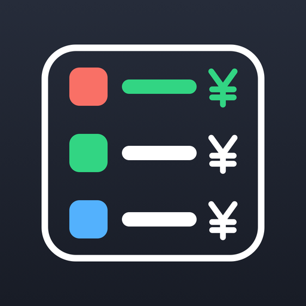

SubSmart は、サブスクと固定費を 1 つの画面にまとめるアプリです。今月いくら出ていくのか、次の引き落としはいつかが、開けばすぐ分かります。
タグでの絞り込み、月別の支払いグラフ、パスコード・Face ID によるロックにも対応しています。SubSmart Pro では、分析のくわしい内訳、解約シミュレーション、CSV での書き出しなどが使えます。
不具合のご報告・ご要望・ご質問は、下記メールアドレスまでお気軽にご連絡ください。
app.info.kn@gmail.com
よくある質問: